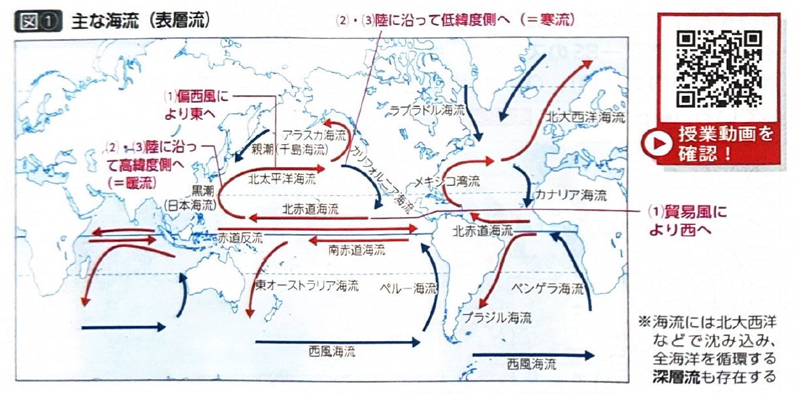
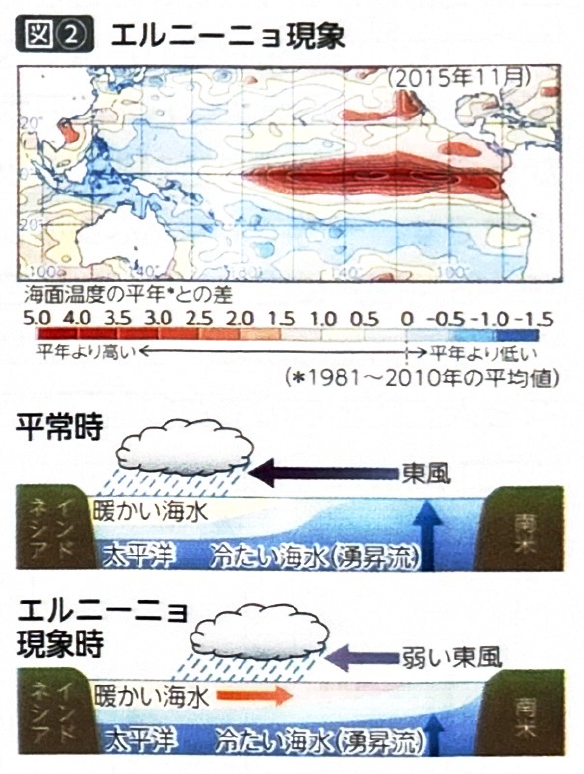
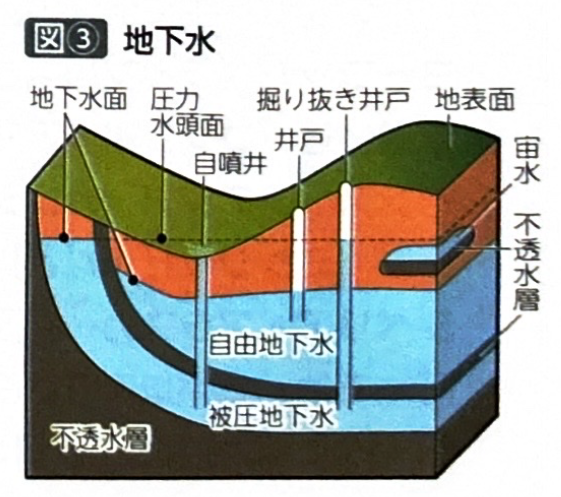
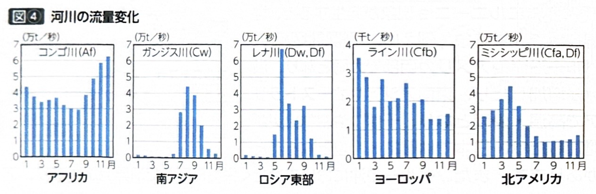
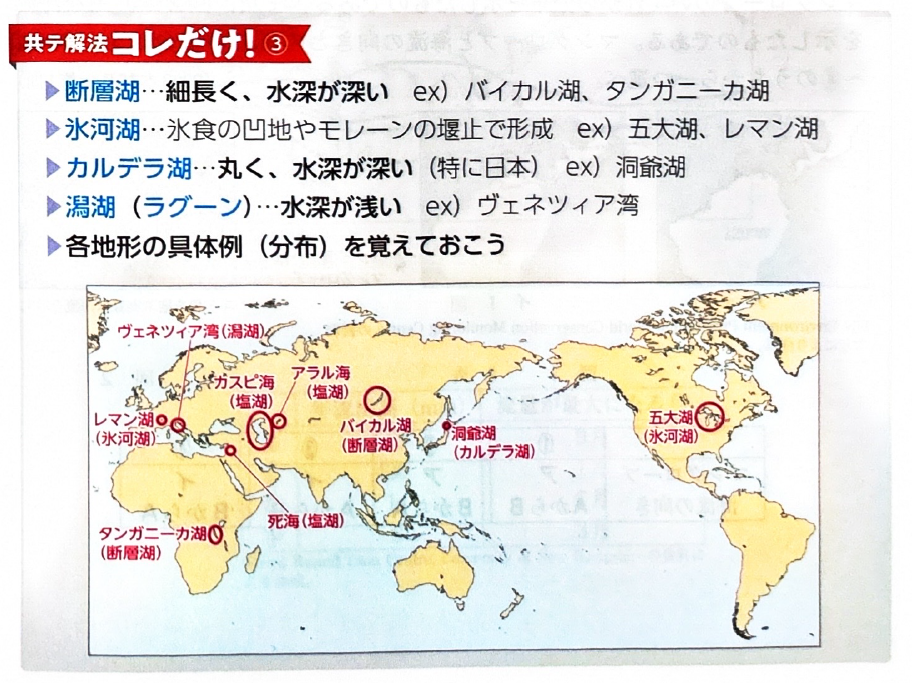

第2章 気候・植生・土壌 - 海洋と陸水
ポイント総復習
1. 地球上の水資源の割合
地球上の水は、大部分が海水（約97.5%）であり、陸上の水（淡水）はごくわずかです。
陸上の水のうち、最も多いのが氷河（約76%）、次いで地下水（約23%）であり、私たちが生活に利用しやすい河川や湖沼の水は全体の1%未満しかありません。
2. 海流のしくみ
海面付近の流れである表層流（吹送流）には、以下のような特徴があります。
- 主に恒常風（貿易風や偏西風）によって流されます。
- 陸地にぶつかると、海岸線に沿って北上あるいは南下します。
- 低緯度（赤道側）から高緯度（極側）へ向かう温かい流れを暖流、高緯度から低緯度へ向かう冷たい流れを寒流といいます。
【主な海流の例】
日本周辺：黒潮（日本海流・暖流）、親潮（千島海流・寒流）
ヨーロッパ周辺：北大西洋海流（暖流・偏西風とともに西岸海洋性気候をもたらす）
北米西岸：カリフォルニア海流（寒流・海岸砂漠の要因となる）
エルニーニョ現象：太平洋東部の赤道付近における海面水温の上昇が数か月以上続く現象で、数年に一度の頻度で発生します。
自由地下水：地表近くの不透水層（粘土層など）の上の地下水のことで、過剰取水により地盤沈下が生まれます。
被圧地下水：不透水層に挟まれた地下水のことで、掘り抜き井戸（鑚井）を掘り、自噴や汲み上げにより取水します。



3. 河川の流量（レジーム）
河川の流量が1年を通じてどのように変化するかを「河川のレジーム」といい、主に流域の気候（降水量の季節変化や融雪）と連動します。
| 地域・河川の例 | 流量の特徴と要因 |
|---|---|
| ヨーロッパ （ライン川など） |
年中安定した降雨があるため、流量は一年を通して安定している。 |
| 赤道付近 （アマゾン川、コンゴ川） |
熱帯雨林気候で年中多雨のため、一年を通して流量が多い。 |
| モンスーンアジア （ガンジス川など） |
夏の季節風（モンスーン）による雨季（7〜9月頃）に流量が急増する。 |
| 北アメリカ （ミシシッピ川など） |
春（4月頃）の融雪期に流量が増加する。 |
| シベリア・アラスカ （オビ川など） |
高緯度のため雪解けが遅く、初夏（5〜6月頃）の融雪期に流量が急増し、大洪水を引き起こすことがある。 |

4. 湖沼の成因
湖や沼は、その成り立ち（成因）によって分類されます。
- 断層湖（地溝湖）：断層作用によってできた凹地に水が溜まったもの。水深が深く、細長い形状になることが多い。（例：バイカル湖、タンガニーカ湖、琵琶湖）
- 氷河湖：氷河の侵食や、運ばれた土砂（モレーン）によってせき止められてできた湖。（例：北米の五大湖）
- カルデラ湖：火山の噴火でできた巨大な陥没地形に水が溜まったもの。
- 三日月湖（河跡湖）：氾濫原で蛇行した河川が取り残されてできたもの。
- ラグーン（潟湖）：砂州によって海と切り離されてできた湖。

基礎問題（理解度チェック）
Q1. 水資源の割合と海流の基本について、空欄を埋めなさい。
地球上の水はほとんどが
であり、陸上の水の大部分は
として存在する。海面付近の海流（表層流）は主に
によって流され、低緯度から高緯度へ向かう流れを
という。
Q2. 世界の主な海流について、空欄を埋めなさい。
北半球の中緯度帯では、
の影響により西から東へ向かう海流が生じる。例えばヨーロッパの西岸には
が流れ、高緯度まで温暖な気候をもたらす。一方、大陸西岸を高緯度から低緯度に向かって流れる寒流として、北米西岸の
などがある。
Q3. 河川の流量変化について、ヨーロッパを流れるライン川は、偏西風の影響などで一年中安定して雨が降るため、季節による流量の変動が小さく安定している。
Q4. 河川の流量の季節変化について、空欄を埋めなさい。
ガンジス川などのモンスーンアジアの河川は、夏の
の時期に流量が急増する。一方、高緯度や冷帯の河川では
の時期に流量が増加する。例えば、北米のミシシッピ川では春（4月頃）に、より高緯度にあるシベリアの河川では初夏（5〜6月頃）に流量が急増し、
が発生しやすくなる。
Q5. 断層作用によって形成された「断層湖（地溝湖）」は、一般に水深が非常に浅く、面積が広大なものが多い。アフリカのビクトリア湖がその代表例である。